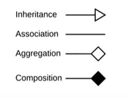

系統分析與設計
系統分析與設計
Methodology
Structured development結構化開發：(不會與用戶接觸)
1. waterfall development(瀑布式)
1. 很穩定
2. 沒彈性
3. 最花時間
4. 清楚知道使用者需求
5. 能見度較低
6. 適合政府government、大公司
7. 每個階段皆能回去，但很難
2. parallel development(平行式)
1. 像waterfall但比較快，須完整的實作
2. 適合短時間或大專案
3. 清楚知道使用者需求
4. design先做大致架構，再細分成各個細項設計
5. 整合前可回去
6. 每個細項重複設計、實作，最後整合
Rapid application development(RAD)快速應用程式開發：(先提雛型，開發時依照客戶意見修改)(有許多複雜、不熟悉的技術且有時間學習)
1. phased(階段式)
1. 第一個版本不完整
2. 適合不清楚要哪些功能的顧客
3. 可快速提供有用的系統及商業價值
4. 可以知道用戶需求的功能及製作方向
5. 只需先開發第一個版本，可以稍後修改、補充，速度快
6. 常用於製作app
7. 每個版本使用者都會回饋
8. 每個階段都可回去，但不能回到上一階段
9. 每一階段重複分析、設計、實作
2. prototyping(雛型式)
1. 短時間提出，但極度不可靠
2. 短時間、小團隊
3. 使用者可以即時回饋
4. 開發前不須分析
5. 使用者不清楚需求
6. 重複分析、設計、實作直到完整的system
3. throwaway prototyping(可拋棄雛型)
1. 分析完善，較為可靠
2. 時程慢，但有較多時間學習
3. 常用於研究、穩定的大專案
4. 需要注意風險
5. 用於需要穩定的大專案，如國家級專案(ex : 高鐵訂票)
6. 計畫、分析後重複設計、實作，最後再分析、設計、實作出完整品
Agile development敏捷開發：(適合elite<專業人士>，小團隊，創新，不適合大專案)(XP較SCRUM快、單一)
1. XP(極致程式設計)(較RAD快)
1. 較針對單一功能
2. 以code交流
3. code須易於理解
4. 與使用者交流
5. 時程：≦40 hours a week, 2 weeks
6. 計畫後重複分析、設計、實作，使用者會加入循環
2. SCRUM
1. 每日會議
2. user加入會議
3. 適合小專案
4. 時程2~4週
5. 較針對多樣、多功能
6. 有Scrum Master確保團隊合理的運作Scrum、product owner確定產品的方向和願景
7. planning 1~4週
Use Case、Activity
action是某個動作 activity是多個action組成的，多個activity組成一個use case action不能被停止，activity可以被停止
use case判斷標準：系統內部的動作 不夠明確 還有不重要的
Develop use-case from the requirement
需求發展use-case
Develop activity diagrams from the use-case(diagram)
Use-case(diagram)發展activity diagrams
Use Cases：
1. The primary driver for all UML diagramming techniques
最主要去驅動所有UML圖表的技巧
2. Depicts activities performed by the user
描述用戶執行的活動
3. Describe What the user can do and How the system responds
描述使用者能做什麼及系統怎麼回應
4. Use cases are building blocks for continued design activities
用例Use cases 建立於持續設計活動的基石
5. Each use-case describes 1 and only 1 function
每個用例 use-case 描述 1個功能
當Base Use Case執行時，Included Use Case也會被執行
有Included Use Case時，關係線要用虛線箭頭從Base Use Case至Included Use Case，並在線上寫<
當Base Use Case執行時，Extend(擴展) Use Case不一定會執行，只有在符合條件時才會執行
有Extend Use Case時，關係線要用虛線箭頭從Extend Use Case至Base Use Case，並在線上寫<
Generalization繼承，在有相似功能時使用，從generalization功能至Base Use Case
Use Case Writing Guidelines：(use case 製作原則)
1. Write in the form of subject-verb-direct object
以主詞-動詞-直接受詞的形式撰寫每組步驟
2. Make sure it is clear who the initiator of the step is
確定誰是步驟的發起者
3. Write from independent observer’s perspective
從獨立觀察者的觀點寫步驟
4. Write at about the same level of abstraction
以大致相同的抽象層次撰寫每個步驟
5. Ensure the use case has a sensible set of steps
確定使用案例有一組合理的步驟
6. Apply the KISS principle liberally
廣泛應用KISS原則(KISS 原則是指在設計當中應當注重簡約的原則)
7. Write repeating instructions after the set of steps to be repeated
在欲重複步驟之後，撰寫重複指令
Verifying(驗證) & Validating(證實) a Use-Case：
Use-cases must be verified(被確認) and validated(有效許可) before beginning structural and behavioral modeling
Utilize a walkthrough：
1. Perform a review of the models and diagrams created so far
2. Performed by individuals from the development team and the client (very interactive)
利用演練：
對目前為止創建的模型和圖表進行審查
由開發團隊和客戶的個人執行（非常互動）
Activity Diagrams：
1. Diagrams are abstract and describe processes in genera
2. They model behavior independent of objects
3. Can be used for any type of process
活動圖：
1. 圖表是抽象的，通常描述流程
2. 它們對獨立於物件的行為進行建模
3. 可用於任何類型的過程
Activity Diagrams：
1. Actions & Activities
動作與活動
2. Something performed for some specific business reason
為了某種特定的企業理由
3. Named with a verb and a noun (e.g., Get Patient Information)
以動詞和名詞命名（例如，獲取患者信息）
4. Activities can be further sub-divided; actions cannot
Activities可以被進一步細分的，但actions不能
5. Object Nodes: represent the flow of information from one activity to another
表示從一項活動流向另一項活動的流程
6. Control Flows: model execution paths
顯示執行順序
7. Object Flows: model the flow of objects
模型化物件流向
Swim lanes：
Used to assign responsibility to objects or individuals who actually perform the activity
用於將責任分配給實際執行活動的對像或個人
Guidelines for Activity Diagram：(Activity Diagram指南)
1. Set the scope of the activity being modeled
設置正在建模的活動的範圍
2. Identify the activities; connect them with flows
確定活動； 將它們與流連接起來
3. Identify any decisions that must be made
確定必須做出的任何決定
4. Identify potential parallelism in the process
確認過程中潛在的並行性
5. Draw the activity diagram
Rules for Verification & Validation：
1. Ensure one recorded event in the flows of the use-case description for each action/activity on the activity diagram
確保在用例描述流中為活動圖上的每個操作/活動記錄一個事件
2. All objects in an activity diagram must be mentioned in an event of the use-case description
活動圖中的所有對像都必須在用例描述的事件中提及
3. The sequence of the use-case description should match the sequence in the activity diagram
用例描述的順序應該與活動圖中的順序相匹配
4. One and only one description for each use-case
每個用例只有一個描述
5. All actors listed in a use-case description must be shown on the use-case diagram
用例描述中列出的所有參與者都必須顯示在用例圖上
6. Stakeholders listed in the use-case description may be shown on the use-case diagram
用例描述中列出的利益相關者可能會顯示在用例圖上
7. All relationships in the use-case description must be depicted on the use-case diagram
用例描述中的所有關係必須在用例圖上描述
8. All diagram-specific rules must be enforce
必須強制執行所有特定於圖表的規則
Verification：確認達成規格 (requirements)；
Validation：確認達成目的 (intended use)。
Concept Map：
1. A concept map is a diagram that depicts suggested relationships between concepts.
concept map是呈現概念間關係的圖表
2. It typically represents ideas and information as boxes or circles, which it connects with labeled arrows, often in a downward-branching hierarchical structure
通常使用方形及標籤表示概念，以箭頭線段連結，箭頭的方向表示往下發展的層次
Class Diagram
1. Functional models represent system behavior
功能模型 表示系統行為
2. Structural models represent system objects and their relationships:People Places Things
結構模型 表示系統物件與它們的人、地、物
3. Class : Templates for instances of people, places, or things
類別：人、地、物實例的模板
4. Attributes : Properties that describe the state of an instance of a class (an object)
屬性：描述類別的實例狀態
5. Operations : Actions or functions that a class can perform
操作：指類別能執行的動作、功能
CRC Cards
Index cards used to document the responsibilities and collaborations of a class
用於記錄類別責任和合作的索引卡
Responsibilities
Knowing : what a class must know manifested as attributes
類別對自身信息的了解
Doing : what a class must do manifested later as operations
類別自身的功能
Ex : 一個人，他知道他的電話號碼、地址、性別等屬性，並且他知道他可以說話、行走的行為能力
Collaboration
1. Objects working together to service a request
各個物件一起工作服務一個需求(由多個類別、物件構成)
2. Attributes can be derived：Preceded with a slash (/)
屬性可被衍生：前方要使用/
Ex : age is derived from date of birth
Public attributes (+): visible to all classes
可執行於所有class
Private attributes (-): visible only to an instance of the class in which they are defined
只能執行於定義該屬性的class
Protected attributes (#): visible only to an instance of the class in which they are defined and its descendants
只能執行於定義該屬性的class及其子class
Package(~):可被任何其他class使用
Generalization(一般化)
(Inheritance)(繼承)
Properties and operations of the superclass are valid for the sub-class
子class能使用父class的屬性及操作
Aggregation(聚合) (子class沒有父class也可以生存) (特定情況的Association)
When an object has another object, then you have got an aggregation between them
當一個物件有另一個物件時，聚合會在兩個物件之中
It expresses the fact that one object is part of another object
表達一個物件是另一個物件的一部份
Ex：engine is part of a car(引擎是車子的一部份)
Association(關聯)(沒有依賴關係，只是簡單的連結)
A directional association between object
物件之間有定向的關聯
It expresses a general relationship other than inheritance and aggregation
表示除繼承和聚合之外的一般關係
Ex：Professor enrolls Retirement Plan, User has AccountEnroll is not an inheritance or aggregation relations
Composition(組合)：(子class沒有父class就無法生存) (特定情況的Association)
That ensures that the containing object is responsible for the lifetime of the object it holds
這確保了包含對像對其持有的對象的生命週期負責
Ex：If Object B is contained within Object A, then Object A is responsible for the creation and destruction of Object B
如果物件B包含在物件A中，則物件A負責物件B的創建和銷毀
Multiplicity(多樣性)：
0..1：zero to one
N：specific(特定) number
0..*：zero to many
1..*：one to many
m..n：specific number range
Implements(實作)：(實作interface)(interface = 箭頭指向處)
Dependence(依賴)：(僅是使用參數，沒有包含該屬性)
software PQCT
increase software productivity(生產率) (P)
increase software quality(品質) (Q)
reducing software costs(成本) (C)
reducing time to market (T)
feasibility study
可行性研究
Software Quality Assurance(軟體品質保證)：
1. ensures that the development activities are performed properly
確保開發活動可以適當地執行
2. ensures that the software artifacts produced by the development activities meet the software requirements and desired quality standard
確保開發活動生產的軟體製品滿足軟體需求及期望的質量標準
Project management activities include：
1. effort estimation(工作量預估)
2. project planning and scheduling
3. risk management
4. project administration
5. others
Domain modeling：
Domain modeling is a conceptualization(概念化) process to help the development team understand the application domain
Domain modeling steps：
1. collecting information about the application domain
2. brainstorming(思考)
3. classifying(分類) brainstorming results
4. visualizing the domain model using a UML class diagram
使用UML class diagram將模型可視化
5. performing inspection(檢查) and review(回顧)
Overriding(覆蓋)：(一個，但不同)
Method overriding is defined as the case when a child class redefines the same method as a parent class. Overridden methods must have the same name, argument list, and return type.
方法覆蓋為子類重新定義與父類相同的方法。 被覆蓋的方法必須具有相同的名稱、參數列表和返回類型
Overloading(多載)：(多個，不一定相同)
Method overloading in Java occurs when two or more methods in the same class have the exact same name, but different parameters.
當同一個類中的兩個或多個方法具有完全相同的名稱但參數不同時，Java 中的方法重載會發生
Liskov Substitution Principle (LSP)：
子類別必須能夠替換父類別，並且行為正常，當子類別替換替換掉父類別時，其功能不受影響，子類別對於方法修改(Override, Overload) 必須依照父類別行為方向，否則會對整體的繼承體系照成破壞，會有產生不可預測的行為與不好察覺 Bug
LSP(Liskov Substitution Principle) 里氏替換原則：
子類別必須完全實現父類別的方法
Ex：bird can fly：
1. Eagle can fly
2. penguin can’t fly(違反)
子類別可以有自己的特性
Ex：bird can eat：
1. Eagle can eat and fly
2. penguin can eat and swim
Sequence Diagram、Behavior State Machine
Behavioral model(行為模型)：(有順序的過程且可能引起其他模型的變動)
表達Use case：
Interaction diagrams互動圖(時序、溝通)
表達資料的變動：
Behavioral state machine行為狀態機
Object物件：an instantiation of a class 類別實體化
Attributes屬性：characteristics of a class 類別的特性
Operation操作：the behaviors of a class, or an action that an object can perform
Class的行為或object可表現的動作
Message訊息：information sent to object to tell them to execute one of their Behaviors
告訴物件執行動作的資訊
Sequence diagrams時序圖：強調訊息順序
Communication diagrams溝通圖：強調訊息流程
Messages on sequence diagrams must match associations on communication diagrams
訊息在時序圖必須符合溝通圖的關聯
產生程式碼前，時序圖及溝通圖的訊息必須被參照到class的操作上
時序圖：
箭頭表達怎麼經過的過程，從一個物件到另一個，包含括號裡的參數，不包含明顯的回傳值
simple簡單：說明訊息執行在一個單執行緒的操作
synchronous同步：傳遞訊息並等待對方執行
balking阻止：傳遞訊息，對方沒有及時接收時，將會拋棄該訊息
timeout超時：傳遞訊息，對方超過特定時數沒接收時，將會拋棄該訊息
asynchronous非同步：傳遞訊息後繼續操作，不需等待對方接收
procedure call過程調用：傳遞訊息後，必須等待訊息處理完才能繼續
return回傳：procedure call的回傳值
時序圖組合：
ref：引用其他地方定義的組合片段
alt：在一組行為中根據特定的條件選擇某個互動
opt：表示一個可選的行為
break：提供了和程式語言中的break類似的機制
par：支援互動片段的併發執行
seq：強迫互動按照特定的順序執行
strict：明確定義了一組互動片段的執行順序
neg：用來標誌不應該發生的互動
region：標誌在組合片段中先於其他互動片斷發生的互動
critical：指此片段中的消息不得與其他消息交錯
ignore：明確定義了互動片段不應該響應的訊息
consider：明確標誌了應該被處理的訊息
assert：標誌了在互動片段中作為事件唯一的合法繼續者的運算元
loop：說明互動片段會被重複執行
溝通圖：(與時序圖不同的是溝通圖焦點在並行，而非生命期)
描述物件之間的關係，強調一系列的物件流向
行為狀態機：(behavior state machine、 state machine、 state chart)
不同的狀態會被捕捉在這個模型裡，在每個物件的生命週期表示不同狀態，可能包含物件的回應與動作
用在複雜的物件
確保轉變與訊息還有操作是相關的
Ex：新病患—還沒被看診
目前病患—現在正在接收治療
先前病患—不需要再被看診或治療
狀態機組件：
1. States—values of an object’s attributes at a point in time
狀態States—該物件的在某個時間的屬性值
2. Events—the cause of the change in values of the object’s attributes
事件Events—物件屬性值變化的原因
3. Transitions—movement of an object from one state to another
轉變Transitions—該物件從一個狀態轉變成另一個狀態的過程
Entry action：
An entry action is shown inside the state, preceded by the word "entry" and a slash.
An entry action is considered to be non interruptible(不可中斷的).
Activity：
An activity is some behavior that an object carries out while it is in a particular state.
An activity is an interruptible(可中斷的) behavior.
An activity is shown inside the state itself, preceded by the word "do" and a slash
Exit Action：
An exit action occurs as part of the transition out of a state.
An exit action is considered to be non interruptible.
An exit action is shown inside the state, preceded by the word "exit" and a slash.
CRUDE Analysis：
幫助確認物件合作關係
C = Create：can one object create another?
一個物件能夠建立另一個物件嗎?
R = Read：can one object read the attributes of another?
一個物件能夠讀取另一個物件的屬性嗎?
U = Update：can one object change values in another?
一個物件能夠改變另一個的值嗎?
D = Delete：can one object delete another object?
一個物件能夠刪除另一個物件嗎?
E = Execute：can one object execute the operations of another?
一個物件能夠執行另一個物件的操作嗎?
Coupling、Cohesion
fuzziness(模糊性)、synonyms(同義詞)、homonyms(同形異意詞)
fuzziness：相同名稱相同意思
synonyms：不同名稱相同意思
homonyms：相同名稱不同意思
Coupling(耦合)
自己class跟其他class的關係
更改一個部分，連帶影響與該部分相關的其他部分
Ex：更改一部分程式碼，導致其他部分出錯，需花額外時間進行修正
Type:
Interaction coupling measured through message passing
(交互耦合)通過消息傳遞測量交互耦合
Inheritance coupling deals with the inheritance hierarchy of classes
(繼承耦合)繼承耦合處理類別的繼承層次
Inheritance coupling refers to the coupling of two classes when one class is a subclass of another. The coupling is through data members that are inherited from a parent class but not re-defined by its subclass.
當一個類是另一個類的子類時兩個類的耦合。耦合是通過從父類繼承但未由其子類重新定義的數據成員來實現的
Ex：shape is superclass has a attribute-color, and rectangle is subclass has a attribute-height, it can use color and color doesn’t re-defined(重新定義)
Cohesion(內聚)
自己class內部的關係、功能
單一部份就可以完成工作，不需要與其他部分相關
Connascence(共生)
結合了耦合與內聚的想法，是一種軟件質量度量，它試圖測量實體之間的耦合，”好的程式應該實現低耦合，高內聚”
The problem of inheritance：
If your class wants to hide variables or methods inherited from a superclass, it shouldn’t inherit from that superclass
如果類別想要隱藏從父類別繼承的變量或方法，則不應從該父類別繼承
If an object needs to be a different subclass at different times, then it shouldn’t be a subclass of that class in the first place
如果一個對象需要在不同的時間成為不同的子類，那麼它首先不應該是該類別的子類
Law of Demeter
Messages should be sent only by an object:
1. to itself
2. to objects contained in attributes of itself or a superclass
包含在其自身或父類別屬性中的對象
3. to an object that is passed as a parameter to the method
一個作為參數傳遞給方法的對象
4. to an object that is created by the method
由方法創建的對象
5. to an object that is stored in a global variable
一個存儲在全域變數中的對象
Interaction Coupling types：(避免高耦合)
---High---
Content 內容
Common 共同
External 外部
Control 控制
Stamp 戳記
Data 資料
Uncoupled 不耦合
---Low---
Content Coupling 內容耦合
一個物件的方法參考另一物件的內部(隱藏的部分)，違反資料隱藏
This coupling occurs when one class is modifying the inner state of another class.
當一個類別正在修改另一個類別的內部狀態時，就會發生這種耦合
Ex:組件直接修改別人的數據
Coupling 共同耦合
This coupling occurs when declaring "Global variables", as all the classes using this variable becomes coupled to each other, and any change in this variable will affect all the coupled classes.
這種耦合發生在宣告“全域變數”時，因為使用這個變數的所有類別都相互耦合，並且這個變數的任何變化都會影響所有耦合的類別
共同耦合缺點：
Lack of clear responsibility for the data 對資料缺乏明確的責任
Reduces readability 降低可讀性
Reduces maintainability 降低可維護性
Difficult to reuse components 難以重新使用組件
Reduces ability to control data accesses 降低控制資料訪問的能力
External Coupling 外部耦合
This coupling occurs when there is a dependency on an external library or system
這種耦合發生在依賴於外部庫或系統時
It is best to reduce the number of places in the code where such dependencies exist.
最好減少code中存在此類依賴關係的位置
Control Coupling 控制耦合
呼叫端的方法傳遞一個控制變數，且該變數被用來控制被呼叫端執行的事件
This Coupling happens when one function calls another function with a "parameter", and this "parameter" forces the called function to trigger a certain action, this causes the second function to be controlled by the first one
這種偶合會發生在當一個方法使用參數呼叫另一個方法，而參數會強制被呼叫的方法執行一些動作，造成第二個方法被第一個方法控制
Stamp Coupling 結構耦合(給整個物件，再自己去抓屬性)
呼叫端傳遞一個合成變數(一個物件)，被呼叫端只使用該物件的一部分來執行
This Coupling happens when the first class is declared as the type of another class' function's parameter, in this case, this other class is tightly coupled to the first class, any change in the first class will affect the other class' function implementation
這種耦合發生在第一個類別被宣告為第二個類別的方法參數類型時，在這種情況下，第二個類別與第一個類別緊密耦合，第一個類別的任何變化都會影響第二個類別的方法實作
Data Coupling 資料耦合(要什麼屬性給什麼屬性)
呼叫端傳送一個變數給被呼叫端，如果是合成變數，整個被呼叫的物件都會用來執行該功能
This coupling occurs when a function has got too many parameters, the downside of such coupling is that the callers of the function should pass all the arguments, even the ones that does not matter to them
當一個方法有太多參數時，就會發生這種耦合，這種耦合的缺點是方法應該傳遞所有參數，即使是那些用不到的參數
Uncoupled 不耦合
Completely uncoupled components are not systems, Systems are made of interacting components
完全不耦合的組件不是系統，系統是由相互作用的組件構成
High coupling
Components are difficult to understand in isolation 獨立的組件難以理解
Changes in component ripple to others 組件的變化會影響其他組件
Components are difficult to reuse 很難重新啟用
Need to include all coupled components 須包含所有耦合的組件
Difficult to understand 難以理解
Low coupling
May incur performance cost 可能會產生性能成本
Generally faster to build systems with low coupling 構建低耦合系統的速度通常更快
Cohesion Types：
Method cohesion 方法內聚
處理各個方法的內聚
Performing more than one operation is more difficult to understand and implement 執行多個操作更難理解和實現
方法應該做一件事，而且只做一件事
Class cohesion 類別內聚
指類別的屬性與方法之間內聚的程度
Classes should not mix class roles, domains or objects
類別不應混合類別角色、領域或物件
一個類別應該只代表一件事，而包含在該類別中的屬性及方法，都應該是要不可或缺的
Ex：一個員工、一個部門，員工必須要有姓名、ID等屬性
Generalization/specialization cohesion 一般化/特殊化內聚
Classes in a hierarchy(階層) should show “a-kind-of” relationship, not associations or aggregations
Generalization is the process of extracting shared characteristics from two or more classes, and combining them into a generalized superclass. Shared characteristics can be attributes, associations, or methods
一般化是從兩個或多個類別中提取共享特徵，並將它們組合成一個一般化父類別的過程。 共享特徵可以是屬性、關聯或方法
Specialization means creating new subclasses from an existing class. If it turns out that certain attributes, associations, or methods only apply to some of the objects of the class, a subclass can be created
特殊化意味著從現有的類別創建新的子類別。如果事實證明某些屬性、關聯或方法僅適用於類別的某些物件，則可以創建子類別
Method cohesion Type：
---Low---
Coincidental 偶發
Logical 邏輯
Temporal 暫時
Procedural 程序
Communicational 溝通
Sequential 順序
Functional 功能性
---High---
Coincidental Cohesion 偶發內聚
Parts of the component are unrelate
組件的某些部分是不相關的
Parts of the component are only related by their location in source code
組件的某些部分僅通過它們在源代碼中的位置相關
Elements needed to achieve some functionality are scattered throughout the system 實現某些功能所需的元素分散在整個系統中
方法的目的無法加以定義，或方法執行許多彼此無關的功能
EX：一個方法可以執行計算貸款、印出報表等
Logical Cohesion 邏輯內聚(選擇各種不相關的功能)
Several logically related elements are in the same component and one of the elements is selected by the client component
幾個邏輯相關的元素在同一個組件中，並且其中一個元素被客戶端組件選擇
方法有一些相關功能，根據傳給該方法的變數，選擇特定功能
Ex：一個方法可以開啟帳戶、計算貸款等，根據收到的訊息選擇事件
Temporal Cohesion 暫時內聚(同時)
Elements are related by timing involved
元素通過所涉及的時間相關
It groups functions based on time of execution in the life-cycle of the System / Application
它根據系統/應用程序生命週期中的執行時間對功能進行分組
方法支援一些在時間上相關的功能
Ex：初始化屬性
Procedural Cohesion 程序內聚
A procedurally cohesive module performs several different and possibly unrelated activities
程序內聚的模塊執行幾個不同且可能不相關的活動
Elements of a component are related only to ensure a particular order of execution
組件的元素僅與確保特定的執行順序相關，按照一定的順序來執行，但不共用資料
方法支援一些關聯性不強的功能
Ex：一個方法計算學生GPA、列印學生紀錄等
Communicational Cohesion 溝通內聚
Functions performed on the same data or to produce the same data
方法執行於相同資料或產生相同資料
In a communicationally cohesive module, the order of the execution of activities is not important
在一個溝通內聚的模塊中，活動的執行順序並不重要
In this type, all the Code that uses the same data are kept together. Where no class can manipulate the variables of another class except through methods
在這種類型中，所有使用相同數據的代碼都放在一起，沒有類別可以操作另一個類別的變數，除非通過方法
方法結合了兩個以上使用相同屬性的功能
Ex：計算GPA及計算目前累加的GPA
Sequential Cohesion 順序內聚
The output of one part is the input to another. Activities within a sequentially cohesive module must be carried out in a specific order
一個部分的輸出是另一個部分的輸入。 順序內聚模塊中的活動必須按特定順序進行，且共用資料
This type of Cohesion favors grouping those functions with each other
這種類型的內聚有利於將這些方法彼此分組
方法結合兩個功能，第一個功能的輸出被用來當作第二個功能的輸入
Ex：計算GPA、驗證計算的GPA
Functional Cohesion 功能性內聚
A functionally cohesive module performs one and only one problem related task
一個功能內聚的模塊執行一項且僅一項與問題相關的任務
一個方法只執行一個與問題相關的功能
Class Cohesion Types：
---Good---
Ideal 理想
Mixed-Role 混合角色
Mixed-Domain 混合領域
Mixed-Instance 混合實例
---Worse---
Mixed-Role：
類別有一個或多個屬性，將類別的物件關連到同層的其他物件，但屬性與類別的基本語意無關
Mixed-Domain：
類別有一個或多個屬性，將類別的物件關連到不同層的其他物件
Mixed-Instance：
類別代表兩種不同類型的物件，通常不同的實例只使用到完整類別定義的一部分而已
Types of Connascence：
Name
如果方法參考到屬性，那麼方法便連結到屬性的名稱，屬性的名稱改變時，方法的內容也必須改變
Type or Class
如果類別有形態A的屬性，那麼該類別便連結到屬性的型態，屬性的類別改變時，該屬性的宣告也必須改變
Convention 常規/慣例
類別有一個屬性，其值的範圍具語意上的含意，範圍改變時，每個使用該屬性的方法也必須修改
Algorithm 演算法
類別的兩個不同方法依賴於相同演算法來執行(ex: 一個元素插入陣列，及在相同陣列中找出一個元素/insert、find)，演算法改變時，insert及find等方法也必須改變
Position 位置
於一個方法中程式碼的順序、或傳給方法的引數前後順序，對於方法是否正確執行，如果任何一方有誤，方法的運作將不正確
Adding Specifications(添加規格) Review the current set of analysis models
All classes included are both sufficient and necessary to solve the problem
所有包含的類別對於解決問題都是足夠和必要的
No missing attributes or methods
沒有缺失的屬性或方法
No extra or unused attributes or methods
沒有額外或未使用的屬性或方法
No missing or extra classes
沒有缺失或額外的類別
Identify Opportunities for Reuse
Design patterns—groupings of classes that help solve a commonly occurring problem
設計模式—幫助解決常見問題的類別
Framework—a set of implemented classes that form the basis of an application
框架—構成應用程序基礎的一組實作類別
Class libraries—also a set of implemented classes, but more general in nature than a framework
類別庫—也是一組實作類別，但在本質上比框架更通用
Components—self-contained classes used as plug-ins to provide specific functionality
組件—用作插件以提供特定功能的自包含類別
Restructuring the Design 重構設計
Factoring—separating aspects from a class to simplify the design
分解—從類別中分離方面以簡化設計
Normalization—aids in identifying missing classes
正規化—幫助識別缺失的類別
Assure all inheritance relationships support only generalization / specialization semantics
確保所有繼承關係僅支持一般化/特殊化語義
Constraint types：
Precondition—must be true before the method executes
前置條件—在方法執行前必須為真
Post-condition—must be true after the method finishes
後置條件—方法結束後必須為真
Invariant—must always be true for all instances of a class
不變量—類別的所有實例必須始終為真
LSP
LSP(Liskov Substitution Principle) 里氏替換原則：
子類別必須完全實現父類別的方法
Ex：bird can fly：
1. Eagle can fly
2. penguin can’t fly(違反)
子類別可以有自己的特性
Ex：bird can eat：
1. Eagle can eat and fly
2. penguin can eat and swim
LoD
Law of Demeter (LoD)如果只是print或return就不符合LoD
LoD1：使用自己或父類別的方法
Ex：normal()
LoD2：使用自己或父類別的Object
Ex：C c
c.normal()
LoD3：使用別人傳入的參數、Object
Ex：void function(E e){
e.normal()}
LoD4：方法使用方法自己創造的Object
Ex：D d = new D()
d.normal()
LoD5：使用全域變數中的Object (java沒有全域變數)
A和C之間由B來聯繫，但如果A透過B直接使用C，會違反LoD
Ex：(Me直接透過MyFriend使用BillGates)
class Me {
public MyFriend mf = new MyFriend;
public void work() {
mf.getBillGates().work();
}
}
class MyFriend {
public BillGates getBillGates() {
System.out.println("MyFriend介紹BillGates！！");
return new BillGates();
}
}
class BillGates {
public void work(String name) {
System.out.println("BillGates跟" + name + "握手！！");
}
}
public class MyWorke {
public static void main(String args[]) {
Me me = new Me();
me.work();
}
}
A和C之間由B來聯繫，而A聯繫B，再由B聯繫C，沒有違反LoD
Ex：(Me使用MyFriend，再由MyFriend使用BillGates)
class Me {
public MyFriend mf = new MyFriend;
public void work() {
mf. work();
}
}
class MyFriend {
public BillGates getBillGates() {
return new BillGates();
}
public void work(String name) {
BillGates bg = getBillGates();
System.out.println("MyFriend介紹BillGates！！");
bg.work(name);
}
}
class BillGates {
public void work(String name) {
System.out.println("BillGates跟" + name + "握手！！");
}
}
public class MyWorke {
public static void main(String args[]) {
Me me = new Me();
me.work();
}
}